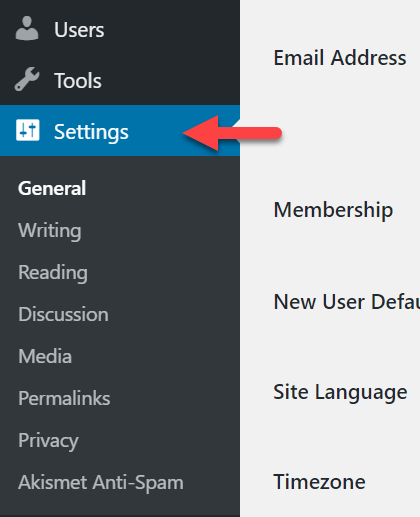

WordPress คืออะไร?
WordPress คือ โปรแกรมสำเร็จรูปตัวหนึ่ง ที่เอาไว้สำหรับสร้างบล็อก หรือ เว็บไซต์ สามารถใช้งานได้ฟรี ถูกจัดให้อยู่ในประเภท CMS (Contents Management System) ซึ่งหมายถึง โปรแกรมสำเร็จรูปที่มีไว้สำหรับสร้างและบริหารจัดการเนื้อหาและข้อมูลบนเว็บไซต์ WordPress
ได้รับการพัฒนาและเขียนชุดคำสั่งมาจากภาษา PHP (เป็นภาษาโปรแกรมมิ่งตัวหนึ่ง) ทำงานบนฐานข้อมูล MySQL ซึ่งเป็นโปรแกรมสำหรับจัดการฐานข้อมูล มีหน้าที่เก็บ เรียกดู แก้ไข เพิ่ม และลบข้อมูล การใช้งาน WordPress ร่วมกับ MySQL อยู่ภายใต้สัญญาอนุญาตใช้งานแบบ
GNU General Public License
ปัจจุบันนี้ WordPress ได้รับความนิยมเพิ่มขึ้นอย่างรวดเร็ว จนมีผู้ใช้งานมากกว่า 200 ล้านเว็บบล็อกไปแล้ว แซงหน้า CMS ตัวอื่นๆ ไม่ว่าจะเป็น Drupal, Mambo และ
Joomla สาเหตุเป็นเพราะ ใช้งานง่าย ไม่จำเป็นต้องมีความรู้ในเรื่อง Programing มีรูปแบบที่สวยงาม อีกทั้งยังมีผู้พัฒนา Theme (รูปแบบการแสดงผล) และ Plugins (โปรแกรมเสริม) ให้เลือกใช้ฟรีอย่างมากมาย นอกจากนี้ สำหรับนักพัฒนา WordPress
ยังมี Codex เอาไว้ให้เราได้เป็นไกด์ไลน์ เพื่อศึกษาองค์ประกอบส่วนต่าง ๆ ที่อยู่ภายใน สำหรับพัฒนาต่อยอด หรือ นำไปสร้าง Theme และ Plugins ขึ้นมาเองได้อีกด้วย สำหรับไว้ให้ผู้นำไปใช้ สามารถเปิดให้บริการพื้นที่ทำเว็บบล็อกเป็นของตนเอง
เพื่อให้ผู้อื่นมาสมัครขอร่วมใช้บริการในการสร้างเว็บบล็อก ภายใต้ชื่อโดเมนของตนเอง หรือที่เรียกว่า Sub-Domain
ประวัติความเป็นมาของ WordPress
เมื่อ 10 กว่าปีที่แล้วตอนที่ WordPress ยังเป็นแค่ Fork คือการที่โปรแกรมเมอร์ทำการ Copy โปรแกรมหนึ่ง แล้วพัฒนามันขึ้นมาเป็นอีกโปรแกรม โดยอาจมีคนหลายคนช่วยกันพัฒนา เมื่อตอนที่ Matt Mullenweg อายุ 18 ปี จากฮิวสตัน รัฐเท็กซัส อเมริกา ลูกชายนักวิศวกรคอมพิวเตอร์ ผู้ชอบการเขียนโปรแกรม ถ่ายรูปและเพลงแจ๊ส ได้เริ่มใช้งาน b2 aka cafelog เพื่อ ที่จะแชร์รูปภาพที่เขาถ่ายตอนไปทริบวอชิงตัน ดีซี บล็อกนี้ชื่อว่า Photomatt.net ซึ่งตอนนี้จะรีไดเร็คไปที่ Official blog ของแมต คือ Ma.tt. หนึ่งปีต่อมา ผู้เขียน b2 Michel Valdrighi ได้หยุดการอัพเดตแฟลตฟอร์มนี้ แมตเลยได้คัดลอกโปรแกรมเดิมของ b2 เพื่อที่จะได้นำมาพัฒนาใช้ต่อในบล็อกของเขา ในช่วงนั้นแมตยังคงเขียนบล็อกอยู่เสมอ และนี่คือสิ่งที่เค้าพูดในโพส The Blogging Software Dilemma ซึ่งนับได้ว่าเป็นจุดกำเนิดของ WordPress เมื่อ 10 ปีที่แล้ว!!
Matt Mullenweg
ผู้ก่อตั้งMike Little
ผู้ร่วมก่อตั้งChristine Tremoulet
ผู้ร่วมก่อตั้งMatt Mullenweg มีความสนใจและมุ่งมั่นที่จำทำให้การทำเว็บนั้นง่ายสำหรับทุกคน เขาได้ลองวิธีที่แตกต่างกันมากมายก่อนที่จะลงตัวที่ b2 แต่เนื่องจากว่าอยู่ดีๆ Michel ผู้เขียน b2 ก็หายไปเฉยๆ ไม่อัพเดตและติดต่อก็ไม่ได้อีก แมตก็เลยไม่รู็จะเอายังไงดี ดังนั้นเค้าเลยทำการคัดลอกเอาตัว b2 มาใช้งานซะเลย ซึ่งพูดได้ว่าเขามองเห็นโอกาสและได้คว้ามันไว้ (b2 เป็น GPL ซอฟต์แวร์ ซึ่งหมายความว่าใครก็สามารถใช้โค้ดจากโปรแกรมนี้ได้) ไมค์เห็นด้วยกับแมต แล้วพวกเขาก็ร่วมกันผลักดันให้ WordPress จากที่มีคนใช้ไม่ถึง 10 คน กลายเป็นมหาศาลในทุกวันนี้ ขั้นตอนนี้เรานับได้ว่า Matt Mullenweg และ Mike Little คือผู้เริ่มก่อตั้งสิ่งที่ทุกวันนี้คือ WordPress แต่เดี๋ยวก่อน ยังมีคนสำคัญอีกคน เธอคนนั้นมีชื่อว่า Christine Tremoulet เพราะ แบรนด์ WordPress นี้เป็นไอเดียของเธอ ใช่อยู่ว่าแมตและไมค์เป็นรากฐานสำคัญ แต่หากขาดคริสทีนไปแล้ว ก็คงไม่มีชื่อ WordPress ที่เรารักอย่างทุกวันนี้
องค์ประกอบหลักของ WordPress มีอะไรบ้าง?
WordPress Core
เป็นตัวซอร์ฟแวร์หลักที่ใช้ในการจัดการเว็บไซต์ เนื้อหา และบทความต่างๆ โดยเราสามารถดาวน์โหลด WordPress เวอร์ชั่นล่าสุดได้ที่ WordPress.org และ th.wordpress.org สำหรับเวอร์ชั่นภาษาไทย
Themes
เป็นส่วนแสดงผลภายนอก แล้วยังมีฟังชั่นเสริมต่างๆ มาด้วย เปรียบเสมือนดีไซน์ของรถซึ่งแต่ละบริษัทก็จะออกแบบมาแตกต่างกัน มีฟังชั่นพิเศษต่างกัน
Plugins
ส่วนเสริมของ WordPress ที่ช่วยเพิ่มความสามารถให้กับเว็บ เปรียบเสมือนการอัพเกรดเครื่องยนต์ให้ทำงานในแบบที่เราต้องการ หรือแม้แต่ดัดแปลงการสำหรับการใช้งานเฉพาะด้าน
WordPress มีข้อดียังไง ?
ข้อดีของ WordPress
การใช้ WordPress เบื้องต้น
การเข้าสู่หน้า Dashborad
เริ่มต้นหลังจากเราได้ทำการติดตั้ง WordPress เสร็จแล้ว ตอนนี้หน้าตาของเว็บเราจะเป็นหน้าเปล่าๆที่มีข้อความ Hello, World สำหรับการเข้าสู่หลังบ้านทำได้โดยการเข้าไปที่ www.(ชื่อเว็บของเรา).com/wp-admin แล้วทำการใส่ Username และ Password เพื่อเข้ามายังด้านในของระบบ

การตั้งค่าพื้นฐาน
หากคุณกดเลือก Settings ที่เมนูด้านซ้ายของ Dashboard คุณจะเห็นว่า settings ของ WordPress มีการแบ่งหมวดหมู่ไว้ชัดเจน (general, writing, reading, etc.)
การตั้งค่าภาษา
การตั้งไทม์โซน
ตั้งค่า Permalinks (โครงสร้าง URL)
การใช้งาน WordPress Editor
หน้าเว็บของ WordPress มี 2 ประเภท คือ
โดยวิธีการเขียนบทความ ให้ไปที่ Dashboard แล้วเลือกเมนู Posts(หรือ Pages ก็ได้ตามที่ต้องการ) >> Add New จะมี text editor โผล่ขึ้นมา
ตัว editor ของ WordPress สามารถใช้งานได้ง่ายมาก นอกจากตัวหนังสือแล้ว ยังสามารถใส่รูปภาพ, วิดีโอ, ไฟล์เสียง, หรือ block ประเภทอื่นๆ ในบทความได้ Block ใน WordPress มีมากมายหลายประเภท
โดยหลังจากเขียนบทความเสร็จแล้ว ให้กดปุ่ม Publish บทความของคุณจะปรากฏบนหน้าแรกของเว็บไซต์คุณทันที (หรือถ้ายังเขียนไม่เสร็จ คุณสามารถกด Save Draft เพื่อ save บทความไว้ก่อนได้)
การสร้างหน้า Home
ปกติแล้วหน้า home ของ WordPress จะมีหน้าตาแบบบล็อก (คือ WordPress จะแสดง posts จากใหม่ไปเก่า) แต่ถ้าคุณไม่ชอบ และอยากสร้างหน้า home ของคุณเอง สามารถทำได้ดังนี้
การลง Plugins
สามารถทำการเพิ่ม Plugins ได้โดยไปที่เมนู Plugins >> Add New แล้วเริ่มค้นหาปลั๊กอินที่ต้องการ เมื่อเจอ plugin ที่ต้องการ ให้กด Install Now ระบบจะทำการดาวน์โหลด plugin มาที่เว็บไซต์ของคุณ
หลังจากนั้น คุณจะเห็นว่าปุ่ม Install Now เปลี่ยนเป็นคำว่า Activate ให้กดปุ่ม Activate เพื่อเริ่มการทำงานของปลั๊กอิน
หลังกดปุ่ม Activate แล้ว คุณจะเห็นว่า Dashboard มีบางอย่างเปลี่ยนไป เช่น อาจมีเมนู settings ใหม่แสดงขึ้นมา นั่นแปลว่าปลั๊กอินเริ่มทำงานแล้วครับ
การเปลี่ยน Themes
ธีม (theme) คือสิ่งที่กำหนดรูปร่างหน้าตาของเว็บไซต์คุณ หากคุณไม่ชอบดีไซน์ปัจจุบันของเว็บไซต์คุณ คุณสามารถดาวโหลดธีมที่คุณชอบผ่าน Dashboard และเปลี่ยนไปใช้ธีมนั้นได้ เว็บไซต์ WordPress จะมีธีมหนึ่งธีมที่ active (ถูกใช้งาน) อยู่เสมอ ต่อให้เป็นเว็บไซต์ที่พึ่งลง WordPress ใหม่ก็ตาม (เวลาลงใหม่ ธีมที่ใช้งานจะเป็นธีม default ที่มากับตัวไฟล์หลักของ WordPress)ก่อนอื่นให้เข้าไปเลือกชมธีมฟรีทั้งหลายก่อน:
ตัวอย่างเว็บที่พัฒนาด้วย WordPress
*คลิกที่ภาพเพื่อเข้าชมหน้าเว็บ*
Doze Studio

Mercedes Benz

Waltdisney

TEDx Melbourne

Delaunay